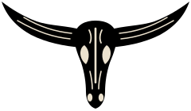
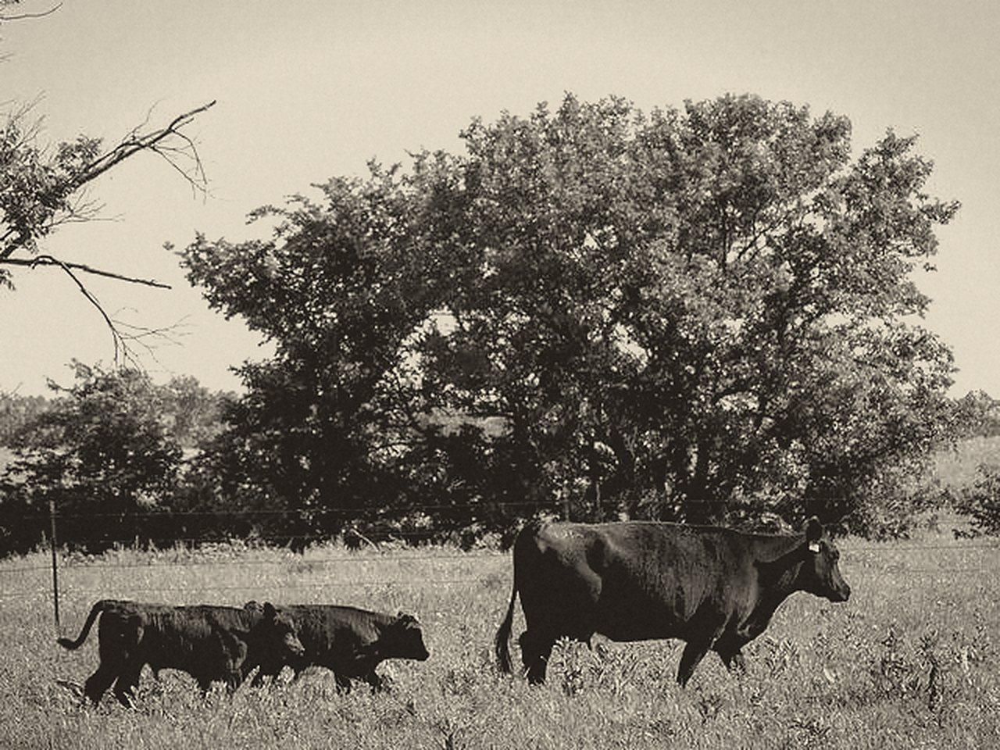
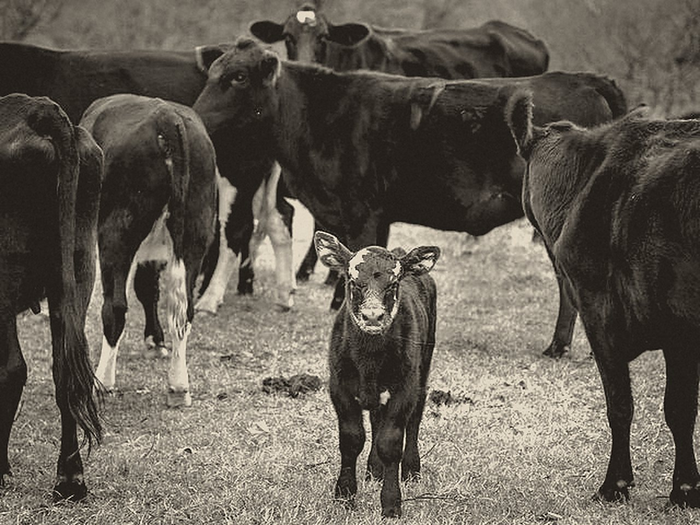
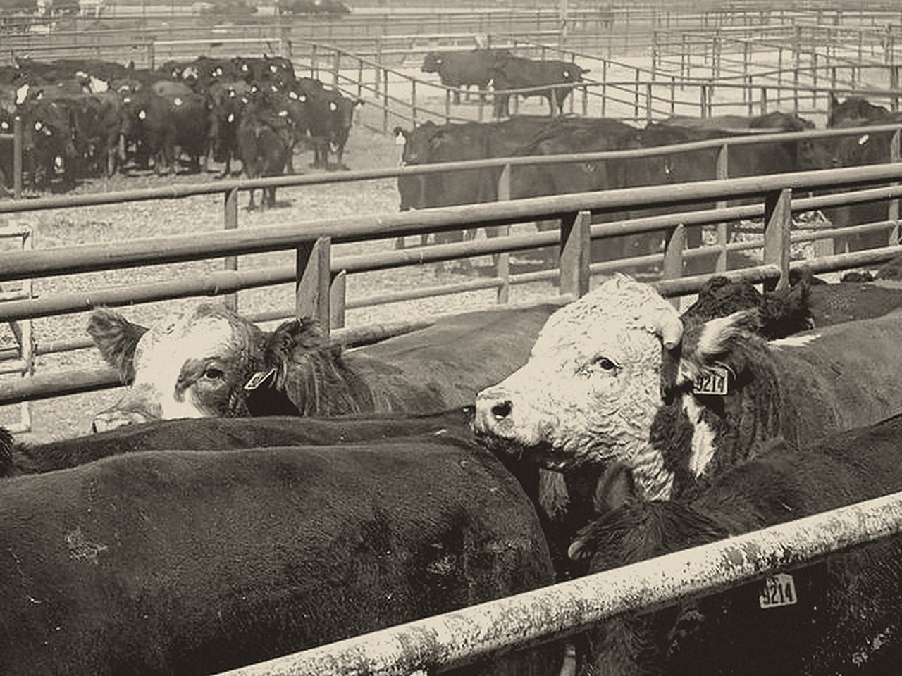

El rancho, de un vistazo
Un cuadro por animal. El color dice cómo está, y el símbolo también. Los filtros se cruzan: cargadas y enfermas deja solo las que son las dos cosas.
Boceto de diseño · 23 sep 2026 · ver la página actual

Fehu control ganadero Pedir informesPara ranchos de cría y engorda
No te dejamos una app vacía para que la llenes tú. Nos das tu libreta, tu Excel o lo que tengas: capturamos cada animal, capacitamos a tu gente y te la dejamos funcionando.

De dónde viene
Fehu empezó en el rancho de mi abuelo. Lo que pasaba con cada vaca se anotaba en papel, y con los años se volvía difícil saber cuál había parido, cuál estaba cargada o a cuál le tocaba vacuna. Le hice esta aplicación para su rancho, y ahí la usan hoy: él revisa su ganado desde el teléfono. La misma aplicación que se usa en su rancho es la que ofrecemos a otros.
— Roberto Linares
No es solo una aplicación
Nos das tus libretas, tu Excel o tus registros actuales, y armamos el censo inicial.
Antes de arrancar confirmas que tu ganado esté bien. Lo que falte, lo revisamos contigo y dejamos claro lo que no se conoce.
Una cuenta para cada persona, y a cada quien lo capacitamos en lo que va a usar.
Ajustamos sin costo lo que ya hace la app para que le quede a tu rancho. Los errores se arreglan siempre sin costo.

Qué hace
Un cuadro por animal. El color dice cómo está, y el símbolo también. Los filtros se cruzan: cargadas y enfermas deja solo las que son las dos cosas.

Arete SINIIGA, madre y padre, salud e historial con fecha. Si un problema se repite, la ficha lo dice: una placenta retenida dos veces queda marcada arriba.

El último peso, los kilos ganados y los kilos por día, cada cifra con su fecha. Y cómo va cada novillo contra el objetivo del rancho.

Enfermas, por parir, sincronizaciones sin cerrar y vacas que no han vuelto a cargar. Nadie tiene que acordarse: la lista se arma sola.
Las pantallas son de un rancho de demostración, con datos ficticios.

Dónde se te puede ir dinero
Cada mes que una vaca pasa vacía sin que nadie lo note es un becerro que se retrasa. La app te dice cuáles llevan demasiado tiempo sin cargar.
El plan sanitario del año está a la vista, mes por mes. Lo que ya tocaba y no se ha hecho sale marcado, no escondido en una libreta.
Con los pesajes en su ficha ves los kilos por día de cada animal. El que no está respondiendo al alimento se nota a tiempo, no el día de la venta.
Una cuenta para cada quien
El dinero es solo tuyo. Los precios de venta, a quién se vendió y lo que vale la bodega los ven únicamente el dueño y la administración. No es que la pantalla lo esconda: el servidor no se los entrega a nadie más.
Ningún otro cliente puede ver tu información. Nosotros entramos solo para darte soporte y mantenimiento, o cuando tú nos lo pides.
Lo mal capturado se anula con su motivo y el original queda a la vista, con quién lo capturó y a qué hora.
Todos los días se hace una copia completa de tu información y se comprueba que esté entera.
Bajas todo a Excel en cualquier momento. Si cancelas, tienes 30 días más para consultar.
Cuánto cuesta
Se paga una sola vez. Esto es lo que hacemos antes de entregártela funcionando:
Ejemplo: un rancho de 200 cabezas con su información disponible, alrededor de $20,000 más IVA.
Paga la base de datos, los respaldos y el mantenimiento. Va según las cabezas que tengas; no cuentan las vendidas ni las muertas.
Precios al mes, más IVA. Pagando por adelantado: 10 % menos por trimestre, 15 % por semestre y 20 % por año. Se cancela cuando quieras.
Preguntas
Para consultar, sí: lo último que viste se queda en el teléfono. Para capturar sí hace falta señal; si en el potrero no hay, se captura al llegar a donde haya, con la fecha en que pasó.
La información que tengas de tu ganado, como la tengas, y un teléfono para cada persona que vaya a usarla. Lo demás lo hacemos nosotros.
No. Nos lo pasas tal como está y de ahí capturamos cada animal. Lo mismo con una libreta: la vemos contigo.
Cuéntanos de tu rancho y te enseñamos cómo quedaría.
Pedir informes